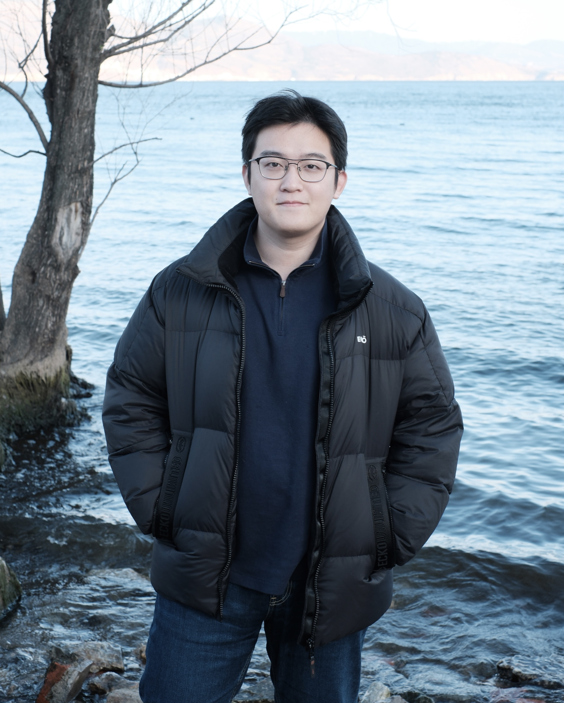

|
Liu DAI 「戴浏」
Hi, thank you for stopping by :)
I am a senior undergrad at Department of Computer Science, Tongji University.
Currently I'm a research intern at
UC San Diego,
advised by Prof.
Hao Su.
Prior to that, I was fortunate to work with
Prof. He Wang at
Peking University
and Prof. Weiwei Guo
at
Tongji-MIT City Science Lab (CSL@Shanghai).
My research interests lie in Data-Driven Embodied AI in the complex and open world, with a focus on:
Generate diverse, interactive and information-rich 3D environments in large scale to support robot learning, especially leveraging generative and foundation models.
Develop data-driven and generalizable robot perception and planning algorithms which demonstrate high robustness when being transferred from simulation to the real world.
I'm actively looking for a Ph.D. position starting 2024 fall. Please feel free to drop me an email if you're interested in what I do.
Email |
Google Scholar |
Github |
Curriculum Vitae
|

|
News
-
05/2023
I received the Pursuit of Excellence Scholarship with 50000¥ (≈7000$), which is the highest honor among all members of Tongji University!
-
02/2023
One paper is accepted to CVPR 2023!
-
02/2023
I will join Prof. Hao Su's Lab at UC San Diego as a research intern from this summer!
-
12/2022
I am awarded with this year's SenseTime Scholarship with 20000¥ (≈3000$), which is an academic scholarship that selects 30 undergrads from all over China!
-
11/2022
I am awarded with this year's Undergraduate Academic Star of Tongji, the highest honor for undergrads at Tongji University!
|
Selected Publication
* : equivalent contribution, † : corresponding author
|
|
|
3D-Aware Object Goal Navigation via Simultaneous Exploration and Identification
Jiazhao Zhang*, Liu Dai*, Fanpeng Meng, Qingnan Fan, Xuelin Chen, Kai Xu, He Wang†
CVPR 2023
[PDF]
[Code]
[Website]
|
|
|
GAMMA: Graspability-Aware Mobile MAnipulation Policy Learning based on Online Grasping Pose Fusion
Jiazhao Zhang*, Nandiraju Gireesh*, Jilong Wang, Xiaomeng Fang, Chaoyi Xu, Weiguang Chen,
Liu Dai, He Wang†
Preprint (Submitted to ICRA 2024)
[PDF]
[Code]
[Website]
|
-
Pursuit of Excellence Scholarship, Tongji University
2023
- Highest Honor for All Members of Tongji University (10/43106, among faculty, students & admin staff).
- 50000¥ (≈7000$).
-
SenseTime Scholarship
2022
- Nationwide Selected 30 Undergraduates in the field of AI.
- 20000¥ (≈3000$).
-
Undergraduate Academic Star of Tongji
2022
- Highest Honor for Undergraduate Students at Tongji University (15/18536).
- Rank 1st among All Recipients.
|
-
National First Prize in Challenge Cup Competition: Research Track
2021 Fall
- Most Influential Research Competition among University Students in China.
- Best Record in College History.
- Team Leader.
-
National Silver Award in Challenge Cup Competition: Entrepreneurship Track
2023 Spring
- Best Record in College History.
- Team Leader.
-
Gold Award of Shanghai in Internet + Competition
2022 Summer
-
University Champion in FLTRP Cup National English Public Speaking Contest
2020 Fall
|
-
Teaching Assistant for Opensource Hardware and Programming (55010501)
Course delivered by Prof. Xiaohua Sun
2021 Fall
-
Talk : An Introduction to LLM-Driven Mobile Manipulation
Delivered at EPIC Lab, Peking University
2023 Spring
[Slides]
-
Talk : A Tutorial of Embodied Navigation Tasks
Delivered at EPIC Lab, Peking University
2022 Summer
[Slides]
-
Talk : An Introduction to Open-World Object Detection
Delivered at EPIC Lab, Peking University
2022 Spring
[Slides]
|
|
{kind=link}


{kind=link}